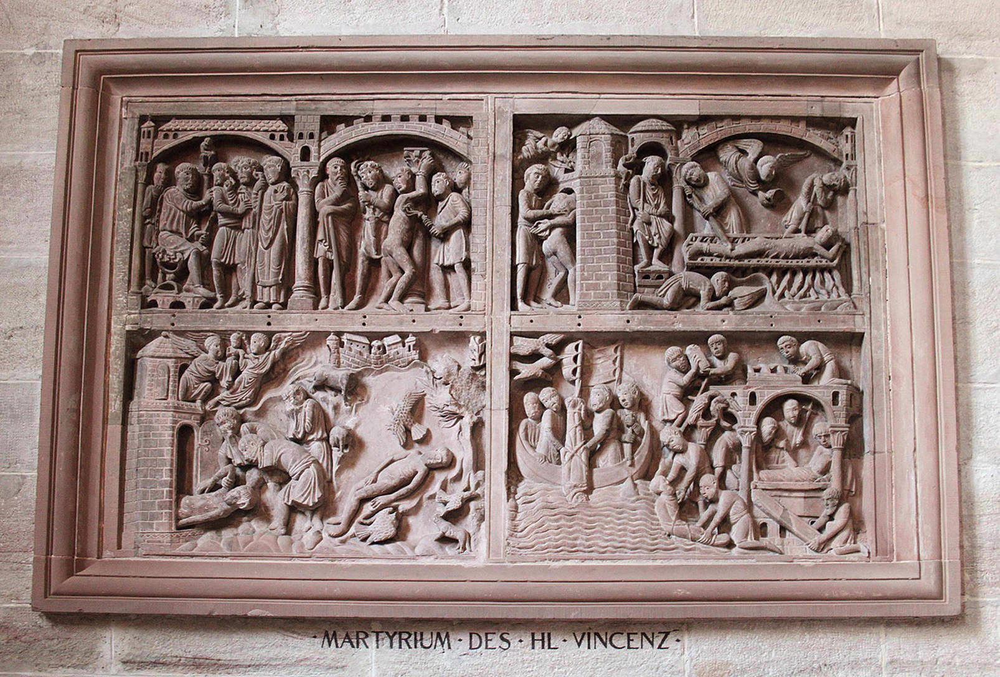

Im Pflichtprogramm eines jeden Besuchers und einer jeden Besucherin des Basler Münsters steht das Grabmal des Erasmus von Rotterdam im Nordseitenschiff. Nur den Aufmerksamen fällt an dieser Stelle auf, dass sich direkt daneben eine grosse Tafel mit Szenen aus dem Leben des Märtyrers Vincentius von Saragossa befindet. Die bildlichen Darstellungen stammen aus dem 12. Jahrhundert und führen die Betrachterin und den Betrachter zurück in das 3. Jahrhundert. Sie geben Auskunft über diese Person und welche Bedeutung er für die Menschen im Verlauf der Geschichte des Christentums spielte.
Vincentius von Saragossa …
… im Basler Münster … In acht Szenen gibt die Tafel Einblick in das Leben des Märtyrers. Die obere Reihe stellt das Martyrium dar, das er erlitten hat. Es beginnt links mit der Klage des Vincentius vor dem römischen Statthalter. Dem schliesst sich rechts die Geisselungsszene durch römische Beamte an. Im Anschluss wird Vincentius nackt in einen Kerkerturm gebracht. Dabei ist vor dem oberen Turmfenster ein Engel zu sehen, der etwas hineingibt. Das obere Band schliesst mit der Folterungsszene des Vincentius auf dem Feuerbett. Auch hier zeigt sich der Engel, der etwas in den Händen hält und es Vincentius reicht. Eventuell handelt es sich um die sogenannte Märtyrerkrone, ein typisches Attribut in der bildlichen Darstellung des Martyriums. Die untere Reihe lenkt den Blick auf die Legenden, die sich um den Tod des Vincentius ranken. So zeigt die linke Szene, wie sein toter Leichnam aus dem Kerkerturm geholt wird und seine Seele im oberen Teil von Engeln zum himmlischen Jerusalem (Darstellung der Stadt) gebracht wird. Daneben findet sich sein toter Körper umgeben von wilden Tieren, die ihn nicht zerfleischen. Es folgt rechts davon die Seebestattung. Diese ist nicht von Erfolg gekrönt und so strandet der Leichnam des Vincentius an Land. Die letzte Szene zeigt den Bau und die feierliche Grablege des Märtyrers.
Vincentiustafel im Basler Münster (Foto: Gergely Csukás)
… und in der Literatur. Vincentius von Saragossa lebte im 3. Jahrhundert. Über sein Martyrium berichten uns Quellen aus dem 4. Jahrhundert (unter anderen die Vita passio sancti Vincentii). Ungefähr zur Zeit der Entstehung der Vincentiustafel entstand ein weiteres Werk, die Legenda Aurea, das uns einen Einblick gibt, was die Menschen im 12. Jahrhundert über den Märtyrer wussten. Vincentius, in Huesca/Spanien geboren, wird hier als gebildet und fromm beschrieben. Er war Diakon des Bischofs Valerius von Saragossa und geriet in römische Gefangenschaft, da er seinen christlichen Glauben nicht aufgeben und der römischen Religion absagen wollte. Dass die römische Herrschaft in den ersten Jahrhunderten Christen, zum Teil auch unter Gewalt und Folter, dazu zwingen wollte, ihren Glauben aufzugeben, ist typisch für diese Zeit. Auch Vincentius erlitt das Martyrium. Er kam in einen Kerker, wurde gefoltert und starb. Um seinen Tod ranken sich zahlreiche Legenden, wie zum Beispiel die Bekehrung römischer Wachmänner zum christlichen Glauben. Besonders wird in den Erzählungen hervorgehoben, dass der Leichnam des Vincentius weder von wilden Tieren gefressen wurde noch im See versenkt werden konnte. Später wird der unversehrte Leichnam wieder an Land gespült.
Wie Vincentius von Saragossa nach Basel kam
Die Verehrung des Vincentius setzte bereits im 6. Jahrhundert im Frankenreich, in dessen Gebiet auch die heutige Schweiz liegt, ein. So zeugen zahlreiche Kapellen und Kirchen (wie zum Beispiel Pfleif in Lugnenz, Splügen), ein Kalender aus dem Wallis und ein Epitaph in Genf davon. Einen bedeutenden Impuls für die Verbreitung gab die Überführung seiner Reliquien 1160 nach Lissabon. Aufgrund christlicher Pilger und Pilgerinnen von dort über die Schweiz nach Rom oder in das Heilige Land erlangte Vincentius auch Bekanntheit auf Schweizer Boden. Davon zeugen zahlreiche Vincentiuskirchen wie etwa in Farvagny. Für Sankt Gallen sind in dieser Zeit sogar Reliquien belegt. Der Märtyrer wurde hierdurch über die spanischen Grenzen hinaus bekannt und beliebt. Aus diesem Grund verwundert es nicht, dass im 12. Jahrhundert in Basel ihm zu Ehren eine Tafel erstellt wurde, die Szenen aus seinem Martyrium darstellen.
Vincentius von Engeln getragen und bewacht
Vincentius von Saragossa ist ein besonderer Mann, der den Menschen im 12. Jahrhundert ein Vorbild im Glauben war. Er wird auf der Vincentiustafel und in der Legenda Aurea von Engeln begleitet, die seine Seele tragen und ihn in der Folter bewachen. Durch die bildliche Darstellung wurde den Gottesdienstbesuchern und -besucherinnen in der damaligen Zeit vor Augen geführt, dass Gott auch im Leiden wirkt und die Menschen begleitet, und dass es gute Gründe gibt, im christlichen Glauben standhaft zu sein. Dafür kann das Martyrium des Vincentius von Saragossa ein Vorbild sein.
Zur Vertiefung:
- Maurer, François, Zu den Fragmenten des Vincentius-Reliefs im Basler Münster, Zeitschrift für schweizerische Archäologie und Kunstgeschichte 64 (2007) 1–12.
Weitere Artikel des/der Autor/in finden Sie hier:
Maria Lissek ist Assistentin am Institut für Historische Theologie an der Universität Bern.